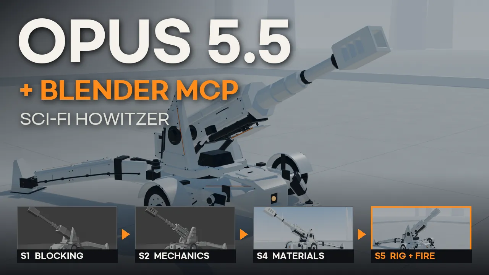
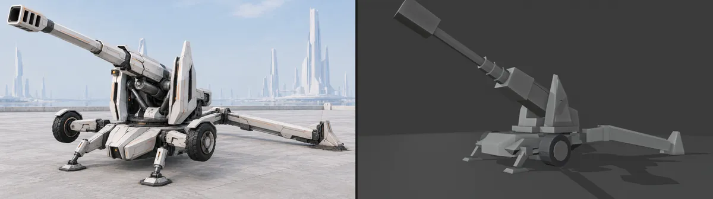
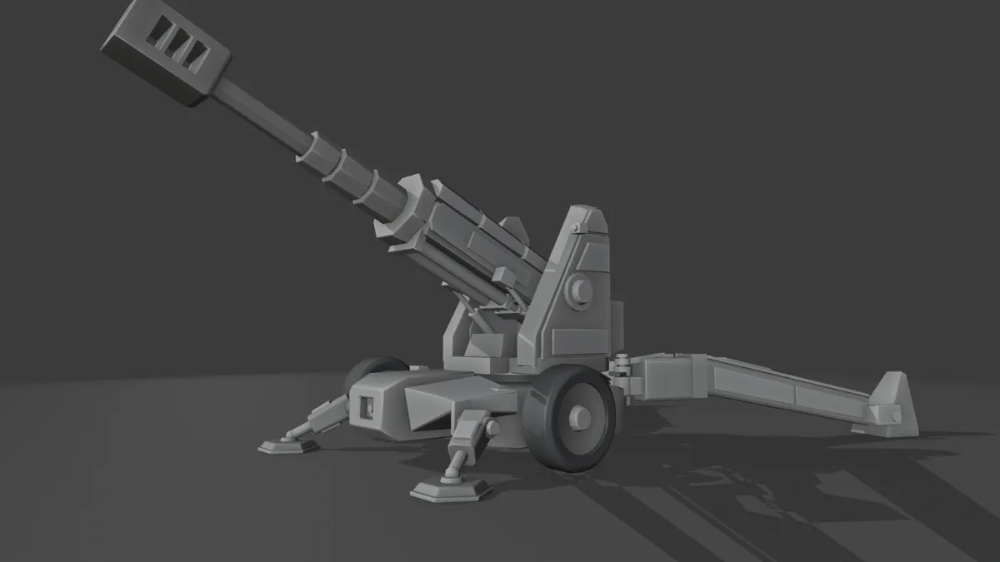
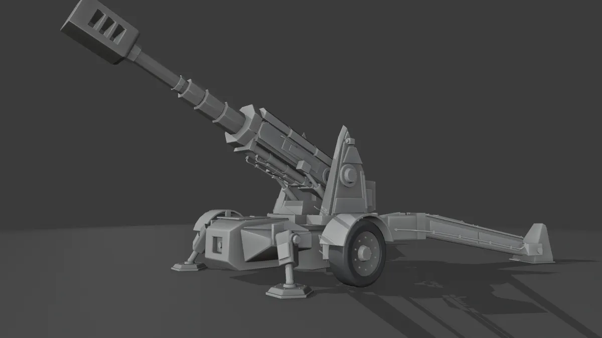
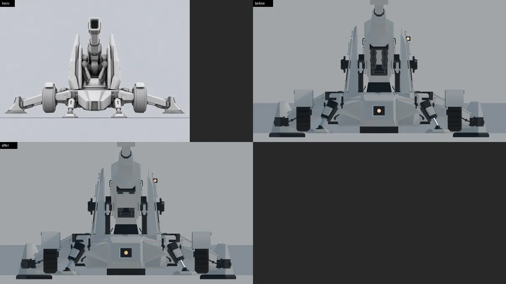
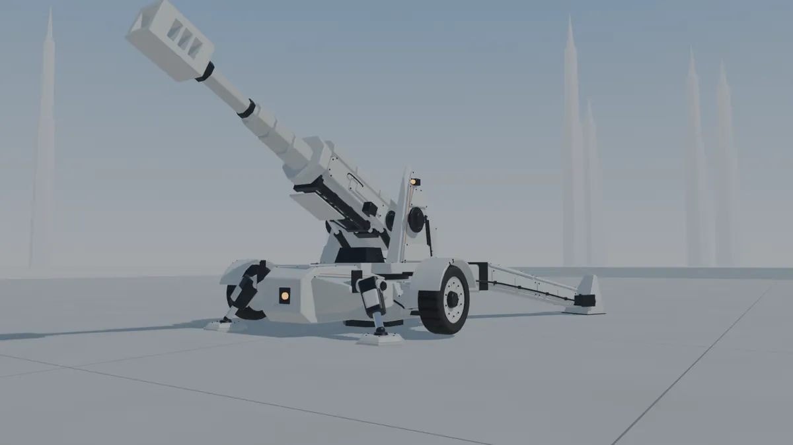
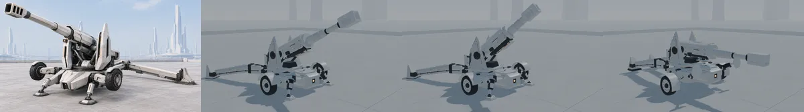
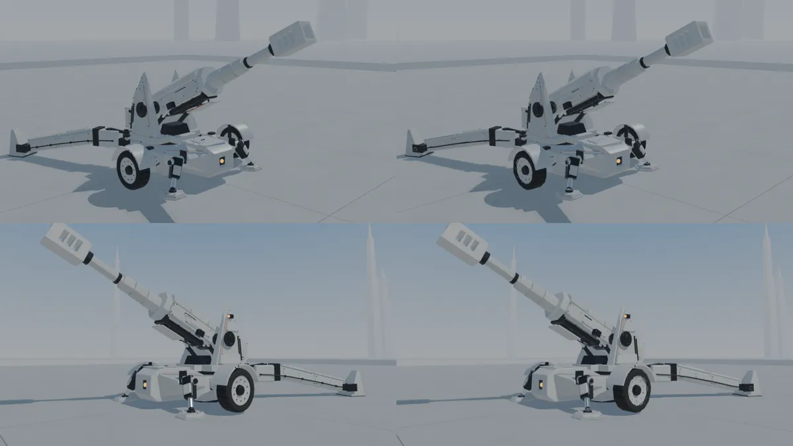

Claude Opus 5.5가 Blender MCP로 Blender 5.2를 직접 조작해 만든 SF 중곡사포입니다. M777처럼 끄는 곡사포 배치(벌어지는 포가 다리·스페이드·포이축·가변 주퇴)에 흰 건축풍 판재 외피를 겹쳐 입혔습니다. 사람은 레퍼런스 이미지와 단계별 프롬프트를 주고, 모델링·재질·리깅·동작은 Claude Opus 5.5가 도구 호출로 한 단계씩 만들었습니다. 그 뒤 같은 모델을 게임 에셋으로 내보냈습니다(S6).

hero와 같은 시점의 클레이 블록아웃을 목표로 덩어리를 맞추고, 정사영 실루엣과 겹친 정도(IoU)·각도로 대조했습니다. 포가 다리 벌림은 50°로 고정하고, 동작에 필요한 가동 범위를 블로킹에서 먼저 쟀습니다.

판재 나눔, 포이축 베어링, 평형기, 주퇴 실린더, 다리·스페이드·바퀴 암·안정기 힌지. 관절마다 실제로 돌려 첫 충돌 부품을 찾는 LIMITS 표를 만들고, 막히는 곳은 형태를 고쳤습니다.

볼트 329개(인스턴스), 칼라·유압 포트·해치·냉각 그릴, 주황 줄 7개, 호스와 클램프. 첫 세션이 중간에 끊겨, 새 세션이 진행 파일을 읽고 다른 PC에서 이어 했습니다. 케이블 때문에 고각 아래 한계가 −6°에서 −4°로 바뀌었습니다.

점토 → 그래파이트 기계 → 흰 세라믹 장갑 → 크롬 로드 → 고무 타이어 → 주황 줄·호박색 발광 순서로 재질을 공개했습니다. 정면에서 주퇴 실린더 아랫면 한 쌍이 눈처럼 보여 요람 배 덮개로 합쳤습니다.


본 14개, 관절 회전 제한은 LIMITS 표에서 가져왔습니다. 고각에 따라 주퇴 길이가 바뀌는 드라이버(40°까지 1.2 m, 45°부터 0.3 m), 안정기·스페이드 IK. 10초 동작은 선회·고각 → 사격·복좌 → 원위치 → 견인 자세 접기이고, 사격 중 접지 부품 미끄러짐은 0 mm입니다.

일반 유닛 예산(6k~12k)에 맞춰 6,848 삼각형·재질 1개로 줄이고, 볼트·표식은 1024 텍스처 4장으로 구웠습니다. 본 18개, 동작 6개(Idle·Fire_Long·Fire_Short·Stow·Deploy·TravelIdle). 선회·고각은 엔진이 따로 돌리고, 가변 주퇴는 고각으로 두 Fire 동작을 섞습니다.

출처: 작업 방식과 프롬프트 뼈대는 Muska 님(@Muska-2026)의 Blender MCP 영상을 바탕으로 했습니다.